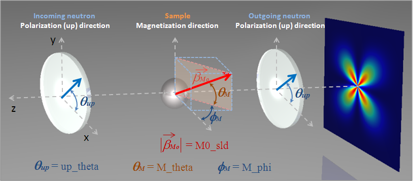
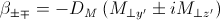
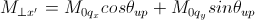
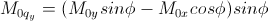
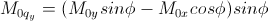
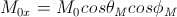
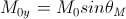
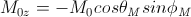

Polarisation/Magnetic Scattering
Magnetic scattering is implemented in five (2D) models
- sphere
- core_shell_sphere
- core_multi_shell
- cylinder
- parallelepiped
In general, the scattering length density (SLD, = β) in each region where the SLD is uniform, is a combination of the nuclear and magnetic SLDs and, for polarised neutrons, also depends on the spin states of the neutrons.
For magnetic scattering, only the magnetization component, Mperp, perpendicular to the scattering vector Q contributes to the the magnetic scattering length.

The magnetic scattering length density is then

where γ = -1.913 is the gyromagnetic ratio, μB is the Bohr magneton, r0 is the classical radius of electron, and σ is the Pauli spin.
Assuming that incident neutrons are polarized parallel (+) and anti-parallel (-) to the x’ axis, the possible spin states after the sample are then
No spin-flips (+ +) and (- -)
Spin-flips (+ -) and (- +)
If the angles of the Q vector and the spin-axis (x’) to the x-axis are φ and θup, respectively, then, depending on the spin state of the neutrons, the scattering length densities, including the nuclear scattering length density (βN) are

when there are no spin-flips, and
when there are, and


 

Here, M0x, M0y and M0z are the x, y and z components of the magnetization vector given in the laboratory xyz frame given by
  and the magnetization angles θM and φM are defined in the figure above.
The user input parameters are:
| M0_sld | = DM M0 |
| Up_theta | = θup |
| M_theta | = θM |
| M_phi | = φM |
| Up_frac_i | = (spin up)/(spin up + spin down) neutrons before the sample |
| Up_frac_f | = (spin up)/(spin up + spin down) neutrons after the sample |
Note: The values of the ‘Up_frac_i’ and ‘Up_frac_f’ must be in the range 0 to 1.
Note
This help document was last changed by Steve King, 02May2015